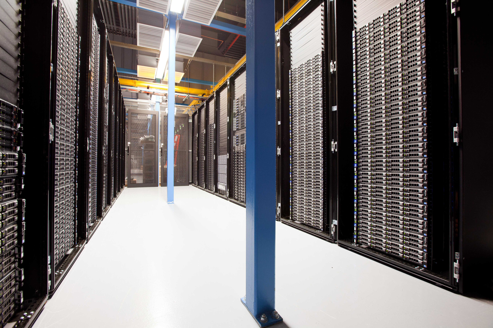

L’impact de l’intelligence artificielle sur le hardware
L’intelligence artificielle transforme fortement les besoins matériels en informatique. Les usages liés à l’IA, comme l’entraînement de modèles, l’inférence locale, l’automatisation, l’analyse de données ou les assistants intelligents, demandent des composants plus puissants, plus spécialisés et mieux optimisés.
1. Pourquoi cette veille ?
L’IA prend une place de plus en plus importante dans les systèmes d’information. Elle influence directement le choix du matériel informatique, que ce soit pour les postes de travail, les serveurs, les datacenters ou les infrastructures locales.
2. Les composants les plus impactés par l’IA
Cartes graphiques GPU
Les GPU sont devenus essentiels pour l’IA grâce à leur capacité à effectuer de nombreux calculs en parallèle. Ils sont utilisés pour l’entraînement de modèles, l’inférence locale, la génération d’images, le traitement vidéo et les modèles de langage.
- Mémoire vidéo VRAM importante
- Calcul parallèle
- Accélération IA
- Forte consommation électrique
- Besoin de refroidissement adapté
Processeurs CPU
Les CPU restent importants pour la gestion du système, les traitements généraux, la virtualisation, les serveurs et certaines charges IA légères.
- Nombre de cœurs
- Fréquence
- Virtualisation
- Gestion des services
- Optimisation énergétique
Mémoire vive RAM
L’IA peut demander beaucoup de mémoire vive, notamment pour manipuler de gros volumes de données, faire tourner plusieurs services, virtualiser des machines ou utiliser des modèles localement.
- 32 Go minimum pour certains usages avancés
- 64 Go ou plus pour les environnements lourds
- Utilité en virtualisation
- Impact sur la fluidité du système
Stockage SSD
Les modèles IA, les datasets, les machines virtuelles et les environnements de développement nécessitent un stockage rapide et fiable. Les SSD NVMe deviennent importants pour réduire les temps de chargement.
- Vitesse de lecture/écriture
- Temps de chargement réduits
- Stockage des modèles IA
- Stockage des VM et sauvegardes
- Importance de la fiabilité
Alimentation et refroidissement
Les composants utilisés pour l’IA peuvent consommer beaucoup d’énergie et produire beaucoup de chaleur. Il faut donc prévoir une alimentation adaptée, un bon airflow et un refroidissement efficace.
- Alimentation suffisamment puissante
- Refroidissement CPU/GPU
- Airflow du boîtier
- Bruit et température
- Stabilité sur de longues charges
3. Impact sur les infrastructures informatiques
L’IA ne concerne pas seulement les ordinateurs personnels. Elle impacte aussi les infrastructures professionnelles et les datacenters.
- Serveurs plus puissants et besoins en GPU dédiés.
- Augmentation de la consommation électrique.
- Besoin de stockage rapide.
- Supervision des températures et performances.
- Maintenance du matériel.
- Sécurité des données traitées par les modèles IA.
- Réseau dimensionné pour le transfert de gros volumes de données.
Exemple concret : Une entreprise qui souhaite utiliser une IA en local doit prévoir une machine adaptée avec un processeur performant, beaucoup de RAM, un GPU disposant de suffisamment de VRAM, un SSD rapide, une alimentation fiable et un système de refroidissement efficace.
4. Lien avec le BTS SIO SISR
Cette veille est directement liée au BTS SIO option SISR, car elle concerne l’évolution des infrastructures systèmes et réseaux.
- Choisir du matériel adapté à un besoin professionnel.
- Comprendre les contraintes d’une infrastructure.
- Mettre en place des serveurs ou machines virtualisées.
- Superviser les performances et la disponibilité.
- Sécuriser les données utilisées par les outils IA.
- Anticiper les besoins réseau, stockage et sauvegarde.
- Conseiller une entreprise sur une solution technique cohérente.
Pour un étudiant en BTS SIO SISR, comprendre l’impact de l’IA sur le hardware permet de mieux analyser les besoins techniques d’une organisation. Cela aide à choisir les bons composants, prévoir les contraintes d’exploitation et proposer une infrastructure adaptée.
5. Conclusion
L’IA a un impact direct sur le hardware. Elle augmente les besoins en puissance de calcul, en mémoire, en stockage et en énergie. Pour les professionnels de l’infrastructure, cette évolution impose une veille régulière afin de comprendre les nouvelles contraintes techniques et de concevoir des systèmes performants, sécurisés et durables.
Sources à compléter
Ajouter ici les articles, documentations constructeur, communiqués ou ressources utilisées pour maintenir la veille technologique.